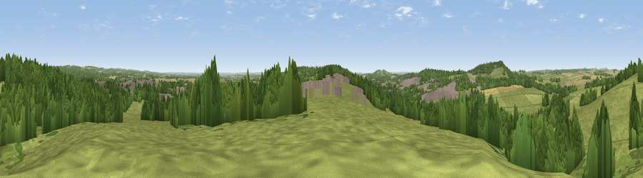

Viewpoint near Perham Down
#19621 in England · top 29% of its area beats it · near Perham DownWhere it is
The exact computed spot (SU 24625 50075). Click the marker for map links.
The view, rendered

A 360° render of this exact spot computed from the terrain model, tree cover and land cover — summer colours, afternoon light, calibrated against photographs of famous viewpoints. Real trees, hedges and buildings will differ in detail.
The panorama
Grey silhouette: terrain skyline in each direction (720 bearings, Earth curvature and refraction included). Dashed green: skyline with trees (+15 m) and buildings (+8 m) as obstacles. Blue strip: how far the ground is visible on each bearing.
Where the view opens
Wedge length = distance to the farthest visible ground on that bearing (vegetation-aware). Rings at 10, 25 and 50 km.
What fills the view
50% grassland · 37% woodland · 7% cropland · 6% built-up
Angular shares of the visible panorama (visual magnitude), not map area. Landscape diversity 0.47 (0–1 Shannon).
Key numbers
More beautiful places nearby
The staircase of upgrades: each row has a higher view potential than everything closer. Driving times are estimates from straight-line distance, calibrated against real road routing — check an actual route before setting out.
| Place | Direction | Drive | Score |
|---|---|---|---|
| Viewpoint near Ludgershall | N · 1 km | ~3 min | 57.4 |
| Viewpoint near Tidworth | WNW · 3 km | ~7 min | 61.0 |
| Viewpoint near Cholderton | SW · 8 km | ~16 min | 61.6 |
| Wexcombe Down | NNE · 8 km | ~17 min | 66.9 |
| Viewpoint near Bulford | SW · 9 km | ~18 min | 70.3 |
| Martinsell viewpoint | NNW · 15 km | ~27 min | 77.3 |
| Viewpoint near Berwick St John | SW · 43 km | ~63 min | 78.2 |
| Viewpoint near Buriton | ESE · 56 km | ~78 min | 80.0 |
51.24932, -1.64856 · source: screening · position refined by local search. Computed location — check access rights before visiting.